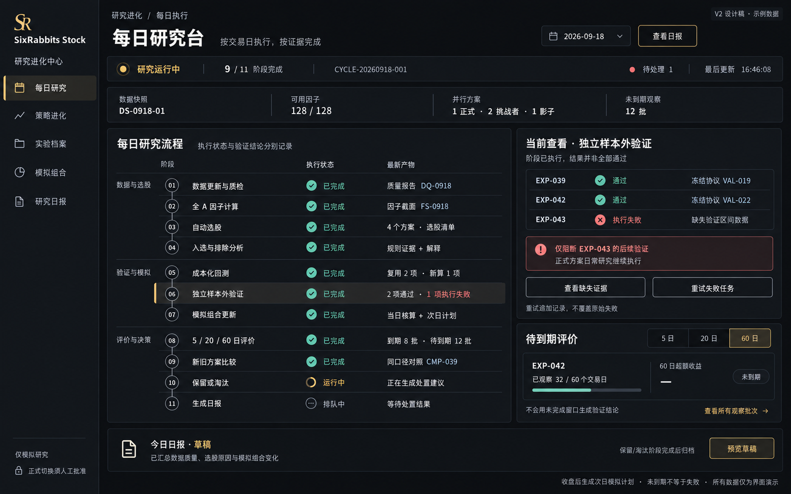

SRSIXRABBITS STOCK DESIGN REVIEW · V2
把每日研究、策略比较和人工决策连在一起。两条独立执行主线，共用一套可追溯的证据账本。
今天跑到哪了、哪些结果可信、哪个环节需要处理，一屏可见。

候选失败不阻断正式方案日常研究；未到期、证据不足与执行失败分别呈现。
先核对比较口径，再同时展示改善、退步、市场阶段差异及每一项判断的证据。
候选可以持续迭代；正式切换需要授权审批，绑定证据、版本、生效时间与回退方案。